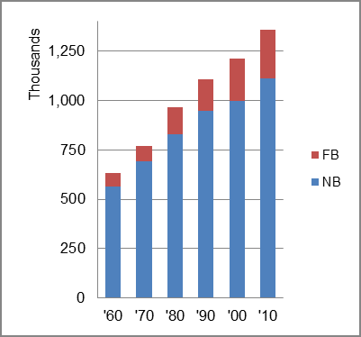

The foreign-born (FB) population increased from 68,900 in 1960 to 248,213 in 2010. That was an increase of 260.3 percent. The foreign-born share changed from 10.9 percent to 18.2 percent.
The share of the overall population that was native-born (NB) increased by 97.2 percent.
Hawaii: Population 1960-2010 
The first chart below shows the three population change factors for three periods adjusted for annual average amounts. Domestic migration (NDM) has been consitently negative and natural change (B-D) has consistently been the main factor adding population.
The second chart shows the same data but with an adjustment to reflect births to immigrants shifted to NIM. In it, NIM becomes the primary factor in population increase in all periods.
Hawaii: Sources of Population Change 1990-2013 Hawaii: Sources of Population Change (Adjusted) 1990-2013
B-D NDM NIM B-D NDM NIM 90-'99 66.1% neg. 33.9% 90-'99 45.6% neg. 54.4% 00-'09 68.7% neg. 31.3% 00-'09 29.0% neg. 71.0% 10-'13 52.9% neg. 47.1% 10-'13 16.6% neg. 83.4%